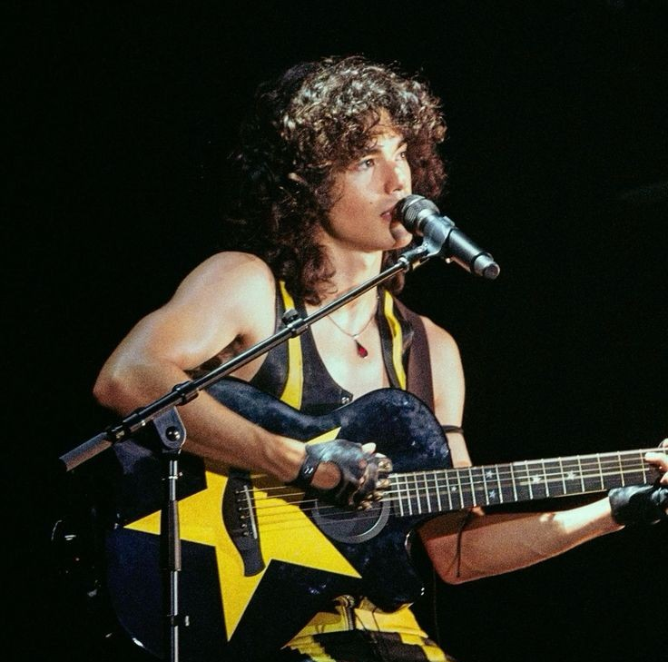

🐦⬛Conan Gray🐦⬛

¿Quién es?
Conan Gray es un cantante y compositor estadounidense conocido por su estilo introspectivo y profundamente emocional. Comenzó compartiendo música en internet desde su habitación y rápidamente desarrolló una base de fans internacional.
Su sonido combina indie pop, bedroom pop y baladas melancólicas que exploran la adolescencia, el desamor, la soledad y la nostalgia. Sus letras suelen sentirse como páginas de un diario personal, lo que genera una conexión muy directa con quienes lo escuchan.
Canciones más escuchadas
| Canción | Álbum | Año |
|---|---|---|
| Heather | Kid Krow | 2020 |
| Maniac | Kid Krow | 2020 |
| Memories | Superache | 2022 |
| People Watching | Superache | 2022 |
| Never Ending Song | Found Heaven | 2024 |
Sneak Peeks (mis favoritas)
The Cut That Always Bleeds
Found Heaven
Actor